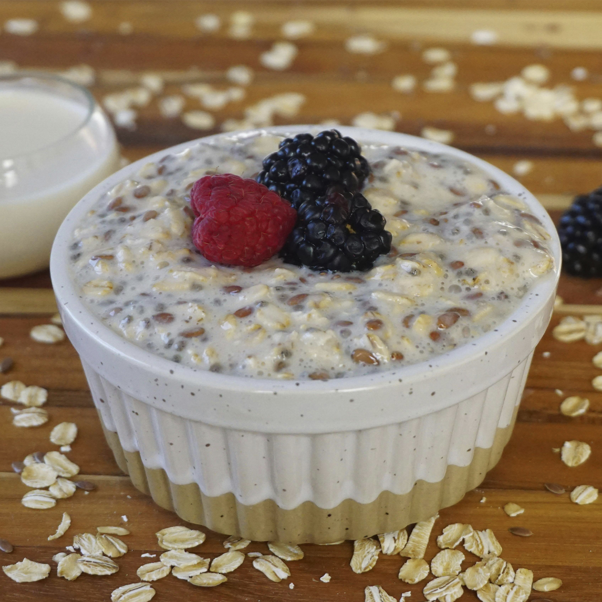
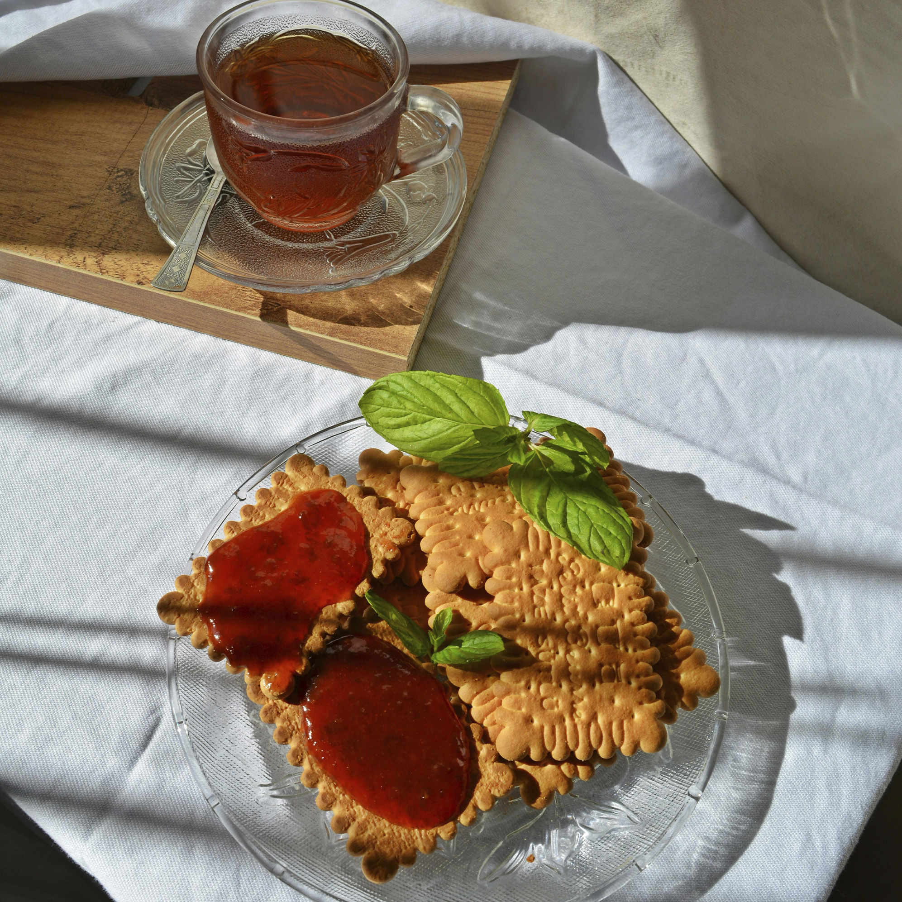

¿CÓMO TE SIENTES HOY?
Elige tu estado de ánimo y encuentra recetas que respeten tu energía emocional
Elige tu estado de ánimo y encuentra recetas que respeten tu energía emocional
Tenemos que agregar más recetas. Por ahora puedes ver la disponible en Todas.

Tristeza

10min

Bajo
Ingredientes: Avena, agua, azúcar (opcional), miel.
Ansiedad
25min
Bajo
Ingredientes: Arroz, agua, mantequilla, sal, algo verde (opcional).


Necesito confort
10min
Bajo
Ingredientes: Té, agua caliente, galletitas.
A veces no necesitas cocinar. Aquí hay ideas gentiles para cuidarte.